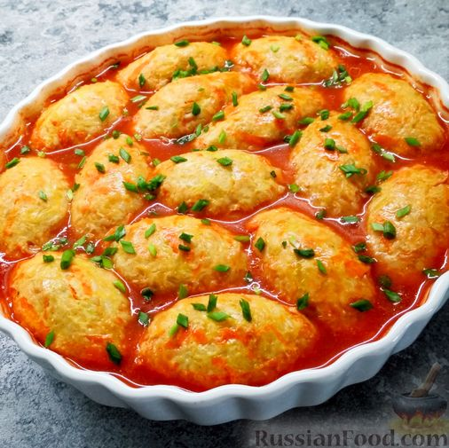

Ленивые голубцы в духовке
Домашняя страница

Ленивые голубцы в духовке
Когда хочется голубцов, а времени на их приготовление нет, выручает ленивый вариант приготовления этого блюда.
«Ингредиенты» :
- Фарш мясной - 400 г
- Капуста белокочанная - 400 г
- Рис круглозёрный - 0,5 стакана
- Яйцо - 1 шт.
- Лук репчатый - 1 шт.
- Морковь - 1 шт.м
- Чеснок - 2 зубчика
- Масло подсолнечное - 1 ст. ложка
- Перец чёрный молотый - по вкусу
- Соль - по вкусу
*
Для соуса:
Томатная паста - 2 ст. ложки + 1 стакан воды
или томатный сок - 1 стакан
*
Для подачи:
Сметана - по вкусу
Зелень свежая - по вкусу
Как приготовить ленивую долму:
- Капусту мелко нарезать и залить кипятком минут на 10. Откинуть капусту на дуршлаг и дать жидкости стечь.
- Рис помыть и отварить на небольшом огне до полуготовности, примерно 10-12 минут после закипания
- Лук очистить и мелко нарезать. Морковь очистить и натереть на крупной тёрке. Чеснок очистить и выдавить через пресс.
- Обжарить лук и морковь на подсолнечном масле в течение 7 минут на среднем огне.
- Смешать фарш, капусту, рис и обжаренные овощи. Добавить яйцо, чёрный молотый перец, измельчённый чеснок и соль. Всё хорошо перемешать.
- Из фарша мокрыми руками сформировать котлеты.
- Томатную пасту развести водой. Уложить котлеты в форму для запекания, залить томатной пастой, разведённой в воде (или томатным соком).
- Включить духовку и разогреть до 180°С. Запекать ленивые голубцы в духовке в течение одного часа.
- Подавать ленивые голубцы со сметаной и свежей зеленью. На гарнир к таким голубцам можно подать отварной картофель или картофельное пюре.